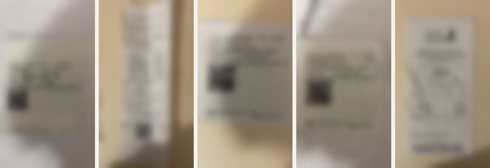
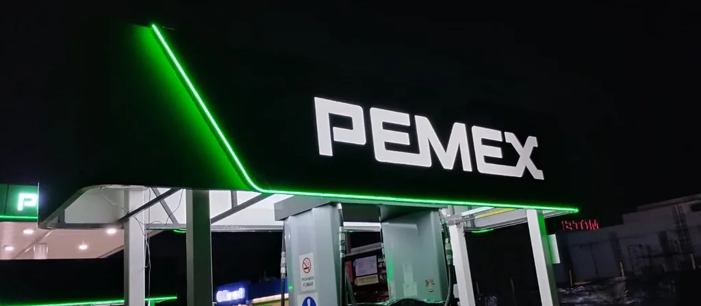
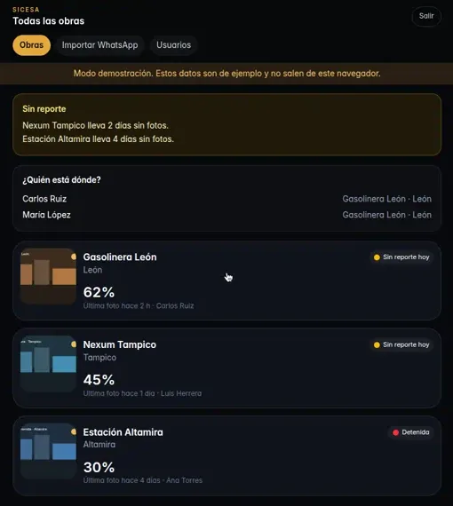
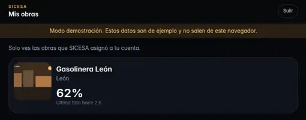
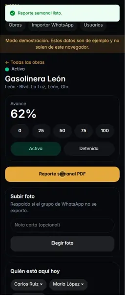
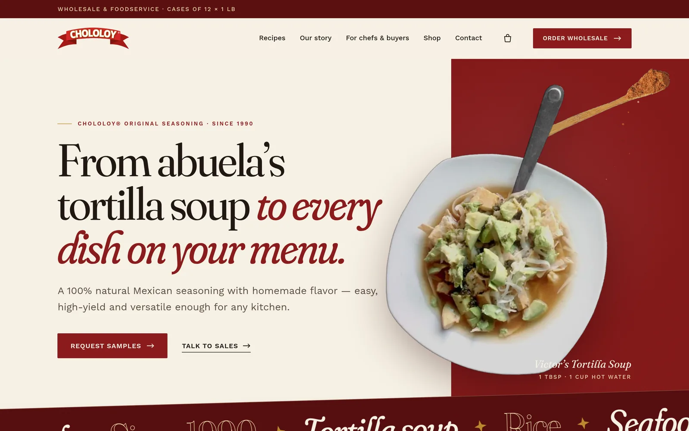
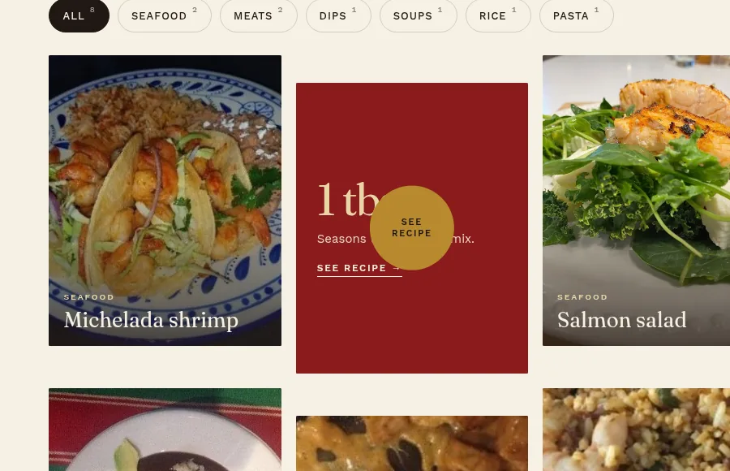
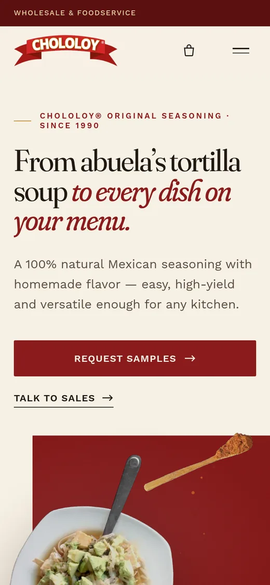

AI and code, put to work in real businesses.
Eduardo Solorio RebolloTechnical Marketer & Growth Engineer
I'm a bilingual Technical Marketer & Growth Engineer. I sit between AI tools and the businesses that still run on paper and WhatsApp (construction, logistics, marketing) and ship things that work on Monday morning.
§ 01 · Selected work
I build with AI coding tools, and I say so openly. My edge isn't typing code faster; it's knowing the business problem, directing the AI precisely, and checking the result where it's actually used: on a job site, in a WhatsApp group, in an ad account.
Daily tools
Petty-cash receipts that invoice themselves.
SICESA is a construction company in Mexico. Field staff pay for fuel, hardware and supplies from petty cash, and every receipt needs a CFDI tax invoice.
Problem
Each CFDI has to be requested on the merchant's own web portal, one receipt at a time. Paper receipts travel in pockets, and invoices get lost along the way.
What I built
- An AI-agent workflow around the tool staff already use: a WhatsApp group.
- Staff send a photo of the receipt. The agent reads it and issues the CFDI on that merchant's portal.
- The invoice PDF is posted back in the same chat.
- Every week it builds the petty-cash report in Excel.
Result
- 01Photo
Staff snap the receipt. That's their whole job.
- 02WhatsApp
Sent to the group they already use. No new app.
- 03CFDI issued
The agent fills the merchant's invoicing portal.
- 04PDF + Excel
PDF back in the chat; weekly petty-cash report.


Every job site, one screen, one weekly PDF.
An installable web app for site engineers, the office and the client, built with AI coding tools on a production stack. sicesa-app.vercel.app
Problem
Progress lived in site photos scattered across phones and chats. Turning them into a report took hours of manual documentation, and clients had to phone in to ask how their project was going.
What I built
- A company-wide “all projects” dashboard: progress, who is on which site, and which sites haven't sent photos.
- A client view where each client sees only their own project.
- A one-tap weekly PDF report with photos, compressed in the browser.
- Daily site log, incidents, Excel-style budgets with automatic VAT, materials approval and role-based access.
Result
Engineers upload photos from the field and the executive report is generated automatically, replacing hours of manual documentation. Clients follow progress in one tracking channel instead of calling.



A family seasoning, told one recipe at a time.
Chololoy is a Mexican seasoning brand sold in the United States, mostly to restaurant kitchens. Freelance project covering marketing and web.
Problem
A product that grew by word of mouth needed short-form content and a website built for US chefs, buyers and home cooks.
What I'm doing
- Producing and editing short-form culinary videos for social media (Premiere, CapCut).
- Rebuilding the website: bilingual story, recipe library, product page and wholesale inquiries.
- Running Meta & Google Ads for US distribution.
- Reporting performance in Power BI.
Status
In progress
Ongoing engagement. The new store is built and in preview; I'll publish results here once there are numbers worth showing.



Which lot pays back? Ask the map.
An interactive catalog for land investment in Tampico, Mexico.
Problem
Each property's market study was a PDF. Comparing lots meant copying cost and sales figures by hand, and nobody could see them side by side on a map.
What I built
- An interactive catalog and 3D map (React, Vite, MapLibre GL).
- Each lot shows its cost, sales, profit and ROI, and the highest-ROI listings are highlighted.
- Python scripts extract the figures from the PDF studies; Playwright collects listing photos.
Result
No manual data entry. The investment case for each lot is one click away, and the best candidates stand out on the map.
Lot L-07 · highest ROI
Schematic redrawn for this page. The real catalog uses the client's data, which stays private.
§ 02 · Also
Smaller pieces that show how I think about data and channels.
- 2025 · GitHubValuador: Methodological Authenticity Index
Python / Streamlit / pandas tool that scores market-research surveys for cognitive biases. Used in my university research paper to audit the “New Coke” case.
- 2026 · Ibero LeónMarketing analytics dashboard
A marketing and advertising dashboard in Power BI, with DAX measures.
- 2025 · 6-month internshipAmazon & Mercado Libre stores
Ran the official stores for Distribuidora de León: listing SEO, digital inventory, and 100% online customer service and disputes, keeping gold/green reputation on both.
§ 03 · Before the code
From kitchen porter to branch manager in New Zealand, in under two years.
In 2023 I moved to New Zealand and started washing dishes at La Mexicana. By 2025 I was running the branch: staff rosters, inventory, relationships with local customers, all in English and without a manager looking over my shoulder.
That's where I learned what I now build for: how a real business runs day to day, and how little patience its people have for tools that don't help.
- 2023Kitchen porter
- →Operational roles
- 2025Branch manager
Staff, rosters, inventory, customers. 100% English.
§ 04 · Skills & tools
Half marketer, half builder. Both halves ship.
Growth & marketing
- Meta Ads
- Google Ads
- Growth marketing
- Campaign planning
- E-commerce SEO
- Amazon
- Mercado Libre
- Premiere
- CapCut
Build (AI-assisted)
- Claude Code
- Gemini
- Antigravity IDE
- Prompt engineering
- HTML / CSS / JS
- React
- Next.js
- TypeScript
- Tailwind
- Firebase
- Git / GitHub
- Vercel
Data & automation
- Power BI (DAX)
- Python
- pandas
- Streamlit
- Playwright
- ERP systems
- Data analysis
Working style
- Async communication
- Autonomous
- Cross-cultural
- Fast software learner
- EN / ES bilingual
- 2026 – Technical Marketer & Web DesignerChololoy · freelance
- 2025 – 2026Software Developer & Operations Automator (AI-assisted)SICESA · construction
- 2025E-commerce & Marketplace CoordinatorDistribuidora de León · internship
- 2023 – 2025Branch Manager (from Kitchen Porter)La Mexicana NZ · New Zealand
- 2020 – 2026BA Marketing & AdvertisingUniversidad Iberoamericana León
§ 05 · Contact
Got a process that still runs on paper and chat?
I'm open to remote roles in growth, technical marketing and AI automation. The fastest way to reach me is email or WhatsApp.